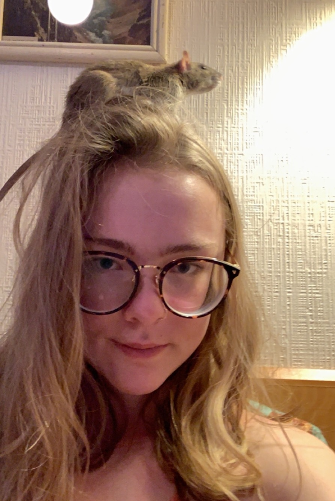

(Kind of.)

My kids love apples, clearly.
Frida is the alpha.
Artemis is her slightly more laid back adopted sister.
And somehow Luna and Soleil, formerly my little sister's rats, entered my custody as well. I've got a whole pack on my hands. (And if Luna's fatness end up being pregnant-ness, well... I'm not sure what I'll do.)

We've been on a lot of adventures together. Sometimes they're like tiny fuzzy emotional support beanbags. They've also pooped on a lot of my stuff and chewed a hole in my down comforter, and they keep me up at night with their squeaky nocturnal antics. But I love them anwyay.